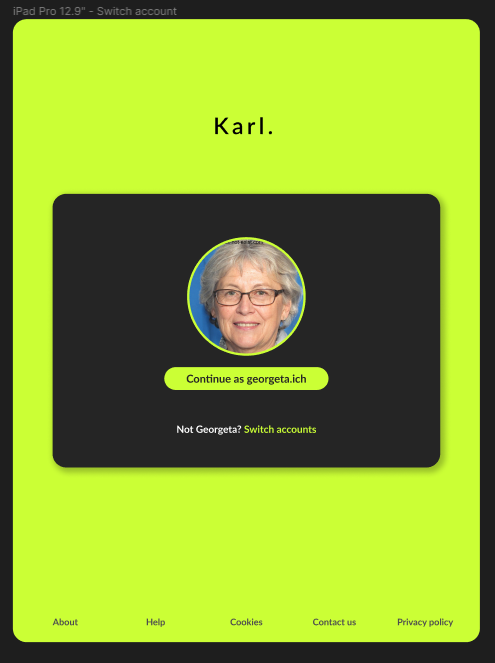
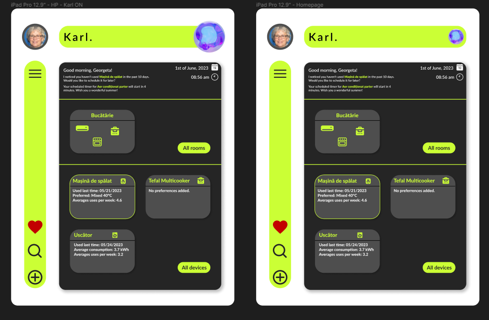
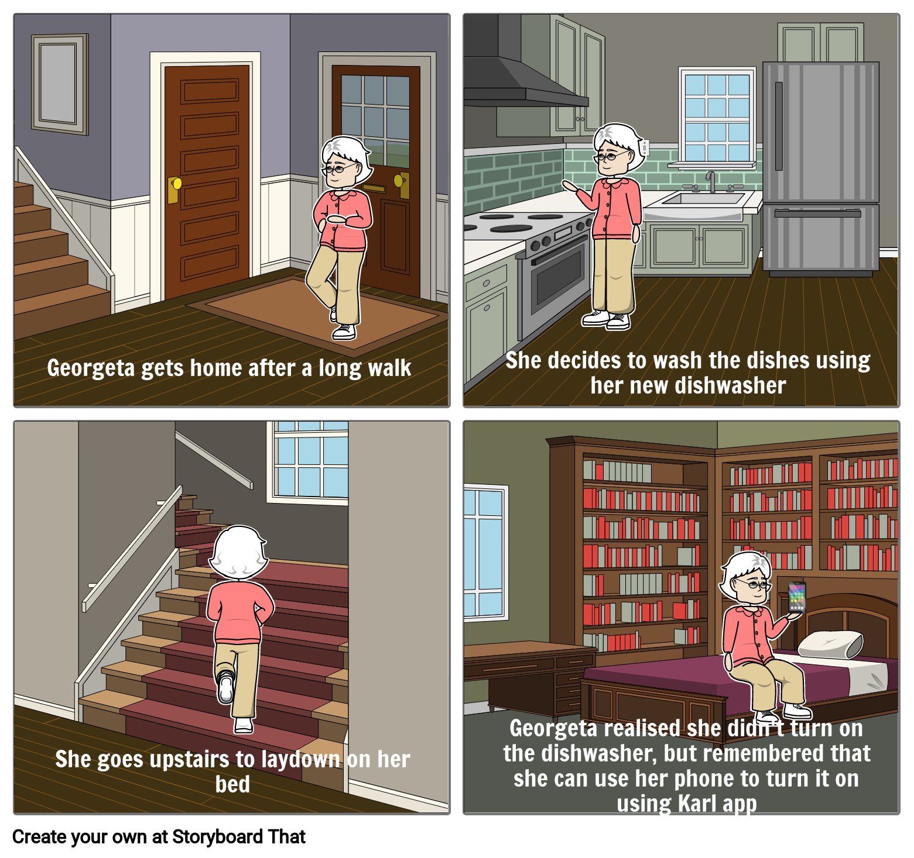
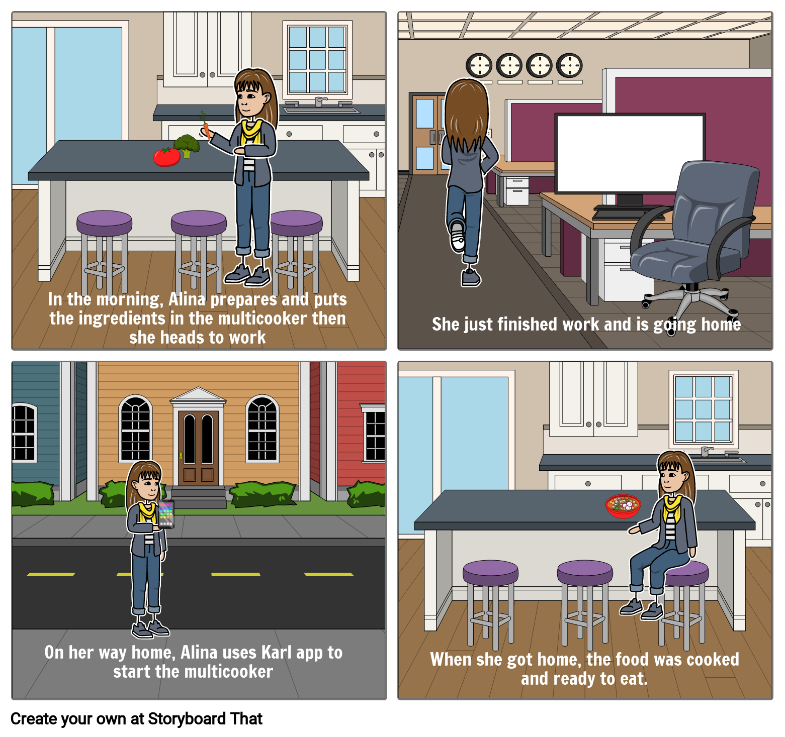

Candrea Rares Lucian, Matei Eusebiu-Andrei
In this document you cand find many functionalitites and details about Karl., our brand new personal assistant. This project was created by Rares-Lucian Candrea and Eusebiu-andrei Matei for the Human-computer Interaction course.
Karl. is here to simplify your daily routine, by creating a fresh and friendly environment that allows everyone to have an easy interaction with all of the appliances you can find in your household.
This is exactly what Karl. would like to tell you at your first date: Fast, with ease.
Karl. is personal assistant dedicated to anyone around the Globe, with no limits. In this document, any costumer is able to find many details about our application, making the use of the product even easier.
The application has an unique scope, perfectly described by its backup taken from from the course's website:
Design a smart personal assistant which makes use of natural means of interaction – for example, gestural, (pseudo-)haptic – in order to control certain home appliances such as BluRay players, fridges, kitchen robots, washing machines, TV sets, and others. For a proper interaction, propose a set of gestures to be used to control these (classes of) home appliances. The status of each controlled appliance can be viewed/changed via a smart device (phone, tablet, TV, conversational physical user assisstant).
Karl. was created to be downloaded on you phone or tablet. The application is not available for PCs yet, since its functionalities are better used from a device you can take everywhere.
Functions that Karl. has:
Karl. was designed to run on Android and iOS devices, so you would better free your memory to download him after reading this document.
Karl. was built in a way that improves UX. The design is a very friendly one and the system lets you personalise it as you like. This works only for tables and smartphones indeed.
To keep everything clean and organisez, the team used GitHub to store all the assets and documents, including the one you are reading.
As we mentioned, Karl. can be downloaded from Google Play or Apple Store. You know you made a huge step in your life when this screen occurs on your gadget.
For the following descriptions, we are going to use one of our personas - Georgeta. She is an old woman that, even if her study-time has passed, started to like the technologies her grandchildren present.
Here you have Georgeta's homepage. Karl. is very gentle and reminds her everyday the last status of some appliances.
As you can see, Georgeta decided to make a change in her life and she downloaded Karl., where she is able to monitorize a lot of details. For example, for her dryer, Georgeta wanted to see the consumption so her energy bill will not increase suddenly.
By the way, this UI could be too much even for Georgeta, but if she presses the Karl. logo in the upper-right corner, she will be able to speak directly to her mate for some help.
We know Georgeta is an old woman so we managed to help her as much as possible. Karl.'s response is both audio and written, so she will not feel embarrased of any health disabilites.
Karl. !!!" width="100%">As you might already notice, Karl. has an uncommon sidebar on the left of the screen. This feature cand be personalised exactly as you like. You can add many widgets beside the Menu button and these are real facts. Georgeta chosed to get with ease to her favourites devices, so she added the Red Heart emoji there. Therefore, she is not always able to remember all of the steps to get somewhere in our application (and we dont blame her, this is such a new thing for an old lady). The help came to her so she added the Search widget too.
If she opens the Menu, she will be capable of reaching to many features Karl. has.
Now, let's see some cases someone could use Karl.:
Our beloved Georgeta decided to go for a walk in the morning. This is the way she looks amazing despite her old age. Coming back home, she decided it's time to do the dishes, and she loaded the dish washer as usual. After that, Georgeta went upstairs to lay down on the bed a bit but suddenly she realised she didn't turned on the machine.
Lucky her! Karl. was there to help. She only had to open the app and tell him to turn on the washing machine - on the economic programme, of course.
Beside Georgeta, we didn't mention the rest of your personas. It's time to get to know Alina, a huge tech-fan.
You should know Alina is a very busy young lady, always running aroung to finish her daily tasks. She still has the power of her young age. This morning, she decided she will have a quick meal-prep, but an unual one. Craving for her favourite healthy-meal, Alina loaded her multi-cooker with all the veggies and spices required.
After a long day at work, in her way back home, Alina only had to knock 3 times on the screen to wake Karl. up. The bonding time between them can start and Alina commands Karl. to start her multi-cooker.
This looks like a happy ending of the day, because Alina can enjoy her favourite dinner. Fresh, hot, just done, ready to eat. Delicious!